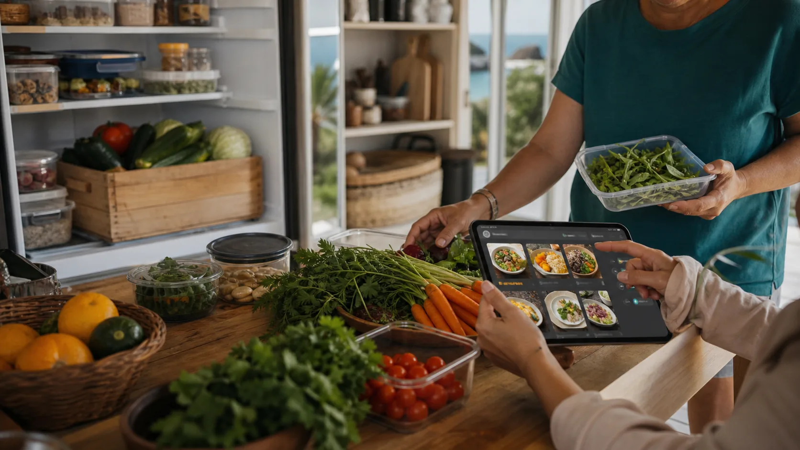

Use ChatGPT or any AI to audit pantries, gardens and freezers, then turn available food, timing and group preferences into a safe, simple plan. The AI suggests; people decide.
Copy a prompt and replace the brackets.
These prompts work in ChatGPT, Claude, Gemini, Copilot or any decent AI chat. Keep the private details out unless the people involved have agreed.
Meal from what we have
I have [ingredients], [pantry staples] and [garden harvest]. We are feeding [number] people at [time of day: breakfast, brunch, lunch, afternoon, evening or late]. Make a simple meal plan using mostly what we already have. Include allergy questions, food safety checks, prep steps, leftovers and one cheap shopping gap list.
Private group post
Write a friendly private group notice asking who can use or add [produce / pantry item / freezer space / transport]. Include timing, pickup or drop-off options, expiry, safety notes, and a tone of trust and care. Do not include private addresses or health details.
Flexible roster
Make a flexible roster for a shared meal where people have different routines. Include morning prep, brunch option, afternoon prep, evening cook, late pickup, transport, cleanup and leftovers. Keep the jobs small enough for tired people.
Fuel-pressure food plan
Food and freight costs are rising. Help us reduce shopping trips and waste this week. Use this pantry, freezer and garden list: [list]. Make a flexible plan with meals, preserving, shared extras and only essential purchases.
Preserve without guilt
We have these leftovers or surplus foods: [list]. Suggest safe ways to use, freeze, dry, preserve, share, avoid sharing or compost them, ranked by what needs action first. Include clear container labels.
Food safety questions
Before this food is shared, what questions should we ask about allergies, storage temperature, dates, source, handling, containers and who is responsible? Make it a plain checklist for a community kitchen.
Kid-friendly or elder-friendly
Adapt this meal idea for [kids / elders / mixed group]. Keep it affordable, familiar, not too spicy unless requested, easy to chew if needed, and clear about allergens. Suggest one way younger and older people can cook together.
Or build a quick prompt here.
Pick the surplus, timing and cooking mood. The page will write a starter prompt you can copy into your AI chat.

Prompt the meal plan, then have a human check safety, taste and local context.